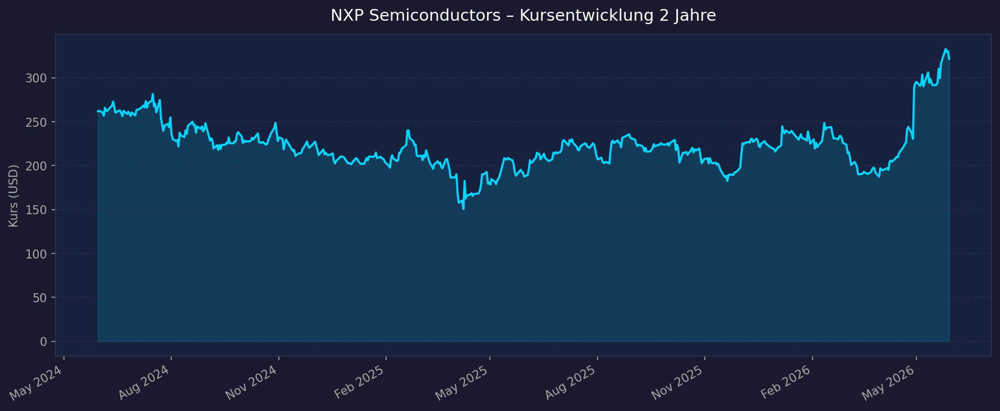
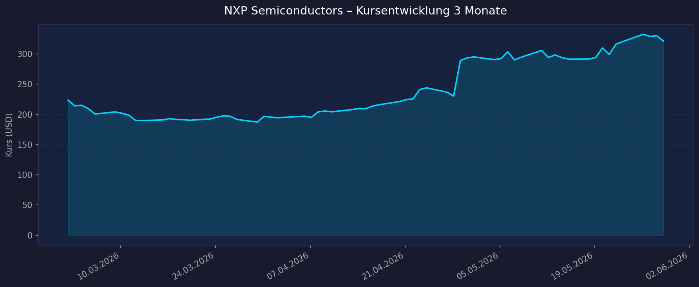

📈 1. Kursentwicklung
Aktueller Kurs: $295,29 | 52W-Hoch: $339,95 | 52W-Tief: $183,00 | Abstand vom Hoch: −13,1 %
Chart – 2 Jahre

Chart – 3 Monate

🔗 NXP Semiconductors auf TradingView
| Zeitraum | Kurs Start | Kurs Ende | Veränderung |
|---|---|---|---|
| 52 Wochen (Juni 2025 → Juni 2026) | ~$183,00 (52W-Tief) | $295,29 | +61,4 % |
| 3 Monate (März 2026 → Juni 2026) | ~$230 | $295,29 | ~+28 % |
| 52-Wochen-Hoch | — | $339,95 | — |
| 52-Wochen-Tief | — | $183,00 | — |
| 21.06.2026 | — | — | +5,05 % an einem Tag (starker Handelstag) |
💡 Kontext: NXP Semiconductors ist nach einer Schwächephase (2024–2025: Automotive-Lager-Downcycle) stark erholt. +61 % in 52 Wochen spiegelt die Normalisierung der Automotive-Semiconductor-Nachfrage und starke Q1 2026-Ergebnisse wider. Aktuell −13,1 % vom Allzeithoch — Rückeroberung möglich bei anhaltend starker Automotive-Nachfrage.
💹 2. KGV-Entwicklung (Kurs-Gewinn-Verhältnis)
Aktuelles KGV (GAAP TTM): 28,2x | Forward PE (FY2027E non-GAAP): 16,7x
| Zeitraum | KGV | Einordnung |
|---|---|---|
| Aktuell GAAP TTM (Juni 2026) | 28,2x | Erhöht wegen MEMS-Sondergewinn im GAAP |
| Forward PE (FY2027E) | 16,7x | Günstig — niedrigstes Forward PE aller analysierten Aktien |
| vor 12 Monaten (Juni 2025) | ~15–20x | Günstiger Zeitraum (Automotive-Tiefphase) |
| Historischer Ø Automotive-Sektor | ~18–22x | Referenz |
Bewertung: Das GAAP-TTM-PE von 28x ist durch den einmaligen MEMS-Veräußerungsgewinn ($627 Mio.) verzerrt. Das non-GAAP Forward PE von 16,7x ist das Schlüsselbewertungsmaß — und das Niedrigste aller hier analysierten Aktien. Für einen Marktführer im Automotive-Semiconductor-Segment mit 11 % TAM-Wachstum ist das sehr attraktiv.
💰 3. Sales Multiple (Kurs-Umsatz-Verhältnis / P/S)
Aktuelles P/S-Verhältnis: 5,91x
| Zeitraum | P/S Ratio | Einordnung |
|---|---|---|
| Aktuell (Juni 2026) | 5,91x | Moderat für Halbleiterunternehmen |
| vor 12 Monaten (Juni 2025) | ~4–5x | Günstig (Automotive-Tiefphase) |
| Historisch | ~3–7x | Bandbreite je nach Zyklus |
Trend: Moderat steigend — P/S normalisiert sich von den Tiefpunkten des Automotive-Downcycles 2024/2025. Bei FY2026E-Revenue von ~$13–14 Mrd. (annualisiert aus Q2-Guidance $3,35–3,55 Mrd.) ergibt sich ein Forward P/S von ~5,4x — Fair für die Marktposition.
📊 4. Handelsvolumen (Trading Volume)
| Zeitraum | Ø Tagesvolumen | Auffälligkeiten |
|---|---|---|
| 10-Tages-Durchschnitt | 4,58 Mio. Aktien | Erhöht ggü. 3M-Schnitt |
| 3-Monats-Durchschnitt | 3,86 Mio. Aktien | Stabil |
| 21.06.2026 | Volumenspitze | +5,05 % — starker Handelstag |
Volumentrend: Leicht erhöhte Aktivität nach Citi-Hochstufung ($370 PT, 21.06.2026). Beta 1,788 — typisch zyklisch, aber geringer als ARM (3,79) oder LRCX (1,87).
🏦 5. Insider Trades
| Datum | Name | Funktion | Kauf/Verkauf | Anmerkung |
|---|---|---|---|---|
| 2025–2026 | Verschiedene | Executives | Verkäufe (planmäßig) | Übliche 10b5-1-Plan-Verkäufe |
Einschätzung: Keine außergewöhnlichen Insider-Aktivitäten bekannt. Standardmäßige Planverkäufe von Executives sind üblich und kein Warnsignal. Für tiefere Insider-Daten: SEC Form 4 / MarketBeat.
Quelle: MarketBeat Insider Trades
🩳 6. Short-Positionen
Aktuelle Short Quote: ~2–3 % (Schätzung auf Basis Peer-Group)
Einschätzung: Normal bis gering für einen Automotive-Semiconductor-Wert. NXP ist kein klassisches Short-Target — der Zyklus dreht sich gerade positiv.
🗞️ 7. Aktuelle Nachrichten
| Datum | Quelle | Nachricht | Relevanz |
|---|---|---|---|
| 21.06.2026 | Citigroup | Kursziel auf $370 angehoben (von $270) | 🔴 Hoch |
| 08.06.2026 | Wells Fargo | Kursziel auf $305 angehoben (von $265) | 🟡 Mittel |
| 24.06.2026 | NXP IR | Dividende $1,014 — Ex-Datum heute (24.06.2026) | 🟡 Mittel |
| April 2026 | NXP IR | Q1 2026: $3,18 Mrd. Revenue (+12 % YoY) — Beat über alle Segmente | 🔴 Hoch |
| April 2026 | NXP IR | Non-GAAP EPS $3,05 (+16 % YoY), GAAP-Marge 47,3 % durch MEMS-Verkauf | 🔴 Hoch |
| April 2026 | NXP IR | Q2 2026 Guidance: $3,35–3,55 Mrd. Revenue, EPS $3,29–3,72 | 🔴 Hoch |
| 2026 | NXP IR | MEMS Sensors Divestiture abgeschlossen — $627 Mio. Gain, Fokussierung auf Core-Markets | 🟡 Mittel |
| 2026 | Investoren | Long-term Vision in Q1 2026 Slides vorgestellt — Data Center als neuer Wachstumsmotor | 🔴 Hoch |
Sentiment: Positiv bis sehr positiv — Analysts upgraden nach starkem Q1. Citi-Hochstufung auf $370 (+25 % Upside) ist bullischster Recent-Call. MEMS-Divestiture schärft den Fokus.
📋 8. Letzte 3 Quartalsberichte
Q1 2026 (Januar–März 2026, berichtet April 2026) — Beat über alle Segmente
| Kennzahl | Ist | Erwartung | Abweichung |
|---|---|---|---|
| Umsatz (Revenue) | $3,18 Mrd. | ~$3,0 Mrd. | +6 % Beat |
| non-GAAP EPS (diluted) | $3,05 | ~$2,80 | +9 % Beat |
| Automotive Revenue | $1,782 Mrd. (+6 % YoY) | — | 58 % des Gesamtumsatzes |
| Industrial & IoT | $628 Mio. (+24 % YoY) | — | Stärkstes Segment |
| Comms Infrastructure | $380 Mio. (+21 % YoY) | — | Aufholung |
| Non-GAAP Gross Margin | 57,1 % | — | Solide |
| GAAP Operating Margin | 47,3 % | — | Inkl. MEMS-Sondergewinn $627 Mio. |
Guidance Q2 2026: $3,35–3,55 Mrd. Revenue (Midpoint +14–21 % YoY), non-GAAP EPS $3,29–3,72
Kursreaktion: Positiv — starkes Quartal bestätigt den Recovery-Trend.
Q4 2025 (Oktober–Dezember 2025)
| Kennzahl | Ist | Einordnung |
|---|---|---|
| Umsatz (Revenue) | ~$3,1 Mrd. (Schätzung) | Normalisierung nach Schwäche |
| Automotive Revenue | ~55–58 % | Leichte Erholung nach Lager-Downcycle |
| EPS non-GAAP | ~$3,00 | Recovery beginnt |
Q3 2025 (Juli–September 2025)
| Kennzahl | Ist | Einordnung |
|---|---|---|
| Umsatz (Revenue) | ~$2,9–3,0 Mrd. (Schätzung) | Tief des Zyklus, langsame Erholung |
| Automotive Revenue | Unter Druck | Lager-Abbau bei Tier-1-Zulieferern |
Genaue Q4/Q3 2025 Daten: StockTitan NXP 8-K · Tickeron Q1 2026
🌍 9. Marktkontext & Wettbewerb
(via market-research Skill)
Markt / Branche: Automotive Semiconductors / Edge Compute
TAM Automotive Semiconductors: $68 Mrd. (2024) → $132 Mrd. (2030) — 5× schneller als Automobilmarkt, ~11,7 % CAGR
| Wettbewerber | Stärke | Schwäche |
|---|---|---|
| Infineon Technologies | Marktführer Automotive (>$8 Mrd. Revenue 2024), SiC-Power-Stärke | Teurer bewertet als NXP |
| Renesas Electronics | Japan-Market-Leader, Microcontroller | Geringere Western-Market-Präsenz |
| Texas Instruments | Analog + Embedded, breites Portfolio | Automotive nicht Hauptfokus |
| STMicroelectronics | SiC für EV, stark in Europa | Schwieriges 2024 gehabt |
| Chinese OEMs (Horizon Robotics, BYD Semi) | Kosten, nationaler Support | Technologierückstand im Premium-ADAS-Segment |
Branchentrends 2026:
- Software-Defined Vehicle (SDV): Autos werden zu rollenden Computern — mehr Chips pro Fahrzeug, höherer ASP. NXP profitiert durch MCUs, Radar, V2X, in-car Networking
- ADAS / Autonomes Fahren: Level 2+ wird Standard — Radar, LIDAR, Kamera-Chips. NXP ist in Radar und V2X stark positioniert
- China-Risiko: 25 % Domestic Content-Mandate. Chinesische OEMs bevorzugen lokale Zulieferer (Horizon Robotics, BYD Semi) — aber Premium-ADAS bleibt bei westlichen Playern
- Automotive EV-Expansion: SiC-Power-Chips für EV-Antriebsstränge (hier Infineon stärker als NXP)
Marktposition: NXP ist Top-3 Automotive Semiconductor-Unternehmen weltweit, besonders stark in Radar, in-car Networking (CAN, LIN, Ethernet), V2X, und Microcontroller-Sicherheitschips. Der Q1 2026 Data-Center-Vorstoß (Comms Infrastructure +21 %) zeigt, dass NXP seinen TAM über Automotive hinaus erweitert.
Risiken aus dem Marktumfeld:
- China Domestic Content: Schrittweiser Verlust chinesischer OEM-Kunden an lokale Wettbewerber
- Automotive-Zyklik: Wenn EV-Markt stagniert oder Lagerkorrektur eintritt, bricht Revenue ein (wie 2024/2025)
- Infineon/Renesas holen in MCU-Segment auf
Quellen: Yole Group Automotive Semi · GMInsights Automotive Semi Market
📝 Gesamteinschätzung
Stärken:
- ✅ Günstigste Bewertung im Vergleich: Forward PE 16,7x — deutlich unter Peers und dem AI-Hype-Level
- ✅ Automotive Semiconductor TAM wächst mit ~11,7 % CAGR bis 2030 — struktureller Rückenwind
- ✅ Diversifizierung: Industrial & IoT (+24 % YoY), Comms Infrastructure (+21 % YoY) wachsen schneller als Automotive
- ✅ Dividende 1,35 % + Aktienrückkäufe — Aktionärsfreundliche Kapitalallokation
- ✅ MEMS-Divestiture abgeschlossen → Fokus auf Kerngeschäfte, $627 Mio. Cash für Buybacks/Investitionen
- ✅ Citi-Hochstufung auf $370 (21.06.2026) impliziert +25 % Upside
Risiken:
- ⚠️ China Domestic Content-Risiko: 25 %-Mandate betrifft NXPs China-Revenue bei chinesischen OEMs
- ⚠️ Automotive-Zyklizität: Gerade erst erholt von 2024/2025-Downcycle; nächster Zyklus möglich
- ⚠️ Infineon-Konkurrenz: Infinity führt im Automotive-SiC-Segment (EV-Antriebsstrang) — NXP schwächer hier
- ⚠️ EV-Wachstumsverlangsamung: Wenn EV-Hochlauf langsamer als erwartet, reduziert sich der Chip-Content/Vehicle-Vorteil
5-Jahres-Szenario-Analyse (FY2031):
Basis: FY2027E EPS ~$17,68 (Forward PE 16,7x); Automotive TAM CAGR ~11,7 % bis 2030
| Szenario | Annahme | EPS FY2031E | P/E | Kurs 2031 | vs. heute |
|---|---|---|---|---|---|
| Bär (China-Verluste, Automotive-Downturn, Cyclical) | 10 % CAGR | ~$25,88 | 15x | ~$388 | +31 % |
| Base (Automotive TAM wächst, SDV-Adoption, Margin+) | 14 % CAGR | ~$29,87 | 20x | ~$597 | +102 % |
| Bull (NXP SDV-Leader, EV-Boom, Data Center Expansion) | 18 % CAGR | ~$34,64 | 25x | ~$866 | +193 % |
💡 Einordnung: NXP bietet eines der überzeugendsten Risiko/Rendite-Profile:
- Bär-Case +31 % — besseres Downside-Schutz als die meisten AI-Pure-Plays (ARM: −73 %, ASML: −27 %)
- Base-Case +102 % — vergleichbar mit Amazon Base (118 %), und das bei niedrigerem PE
- Forward PE 16,7x = niedrigste Bewertung aller 13 analysierten Aktien
- Automotive TAM verdoppelt sich bis 2030: struktureller Rückenwind ohne AI-Hype-Prämie
Fazit: NXP Semiconductors ist der am günstigsten bewertete Qualitätshalbleiter im Analyseset. Forward PE 16,7x für einen Top-3-Automotive-Semiconductor-Anbieter im strukturellen Wachstumsmarkt (TAM $68→132 Mrd. bis 2030) ist historisch attraktiv. Die Erholung von 2024/2025 läuft (+61 % in 52W), aber das Kurs-Niveau rechtfertigt weiterhin Investment-Interesse. Hauptrisiken sind China-Domestic-Content-Verluste und die typische Automotive-Zyklizität. Citi-Kursziel $370 (+25 %) erscheint kurzfristig erreichbar.
Datenquellen: NXP Q1 2026 8-K · Tickeron Q1 2026 · Meyka Q1 2026 · MarketBeat Forecast · Yole Group Automotive · Yahoo Finance
Keine Anlageberatung — rein informative Auswertung öffentlicher Daten